Front Suspension (AWD)
Air Spring Damper
• Boot must also be replaced when air spring is replaced.
• Follow repair notes for servicing air spring dampers. Refer to --> [ Air Spring Damper Repair Information ] Air Spring Damper Repair Information.
Special tools, testers and auxiliary items required
• Torque wrench (VAG 1332)
• Shock absorber set (T10001)
- Remove air spring damper. Refer to --> [ Air Spring Damper ] Air Spring Damper.
• Check whether air spring is still filled with a residual pressure of 3 bar.

• Press with thumbs on air spring bead. Bead must demonstrate noticeable resistance.
• If great resistance is not noticed, air spring is not pressurized and it must be replaced together with the residual pressure retaining valve.
Disassembling
- Clamp air spring damper at lower mount in a vise with protective covers.
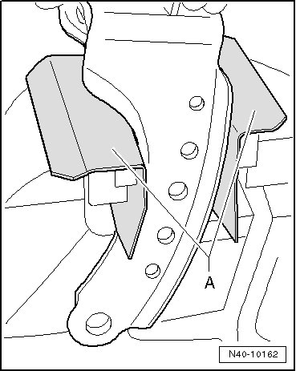
A Aluminum protective covers
Make sure mount is not damaged.
- Loosen bolts - arrows - alternately on mounting bracket until air escapes from air spring.
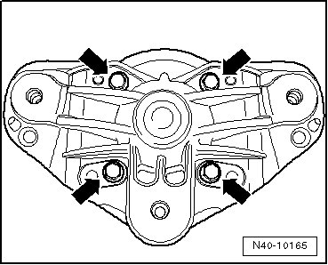
CAUTION!
• The air spring is under about 3 bar residual pressure. Therefore, always loosen bolts - arrows - only about one rotation until air escapes.
• During disassembly, loosen bracket bolts with light tilting motions of air spring.
• Do not under any circumstances bend over the air spring damper when loosening the bolts. If bolts are removed so far that air no longer escapes, there is risk of damage from bracket and bolts.
• Air spring must not be rotated when it is depressurized. There is the danger that the boot inside the air spring could be damaged by kinking or folding.
- Remove nut from bearing.
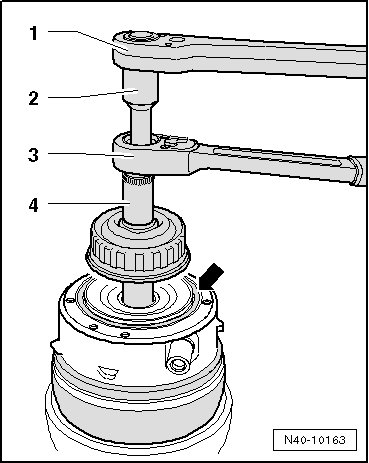
1. Commercially available ratchet
2. (T10001/14)
3. (T10001/11)
4. (T10001/3)
- Remove bearing from shock absorber.
- Remove clamp - arrow - securing boot.
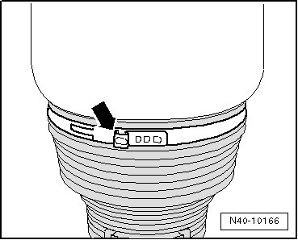
- Slide boot down and have it secured by a 2nd technician.
- Grasp air spring rolling pistons - 1 - with both hands and slide them with light right/left rotation upward in - direction of arrow - from shock absorber.
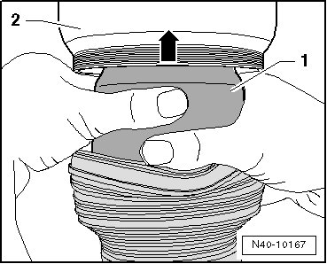
Entire air spring must rotate with it.
• Ensure rolling piston - 1 - does not slip down out of outer guide - 2 -.
• If air spring is reused and air spring has slipped out of outer guide, it must be slid in again by forming even circumferential folds on boot - arrows -.
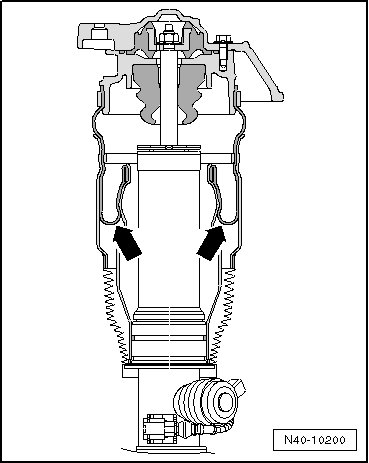
- When replacing air spring, slide stop buffer - 1 - down out of air spring centering seat.

Stop buffer is reused.
- Remove boot from collar on shock absorber - arrow - and remove it from shock absorber.
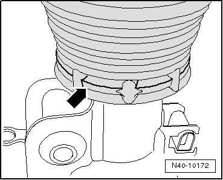
• Vehicles with Vehicle Identification Numbers (VIN) up to 7L-4-052999 are still equipped with wheel speed sensors - 1 - on fork. This sensor with bracket must be reused when installing new shock absorber.
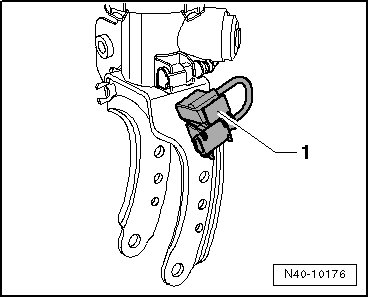
• To do so, the sensor must be installed on new shock absorber using a new bolt. Note installation position as shown in illustration.
Assembling
- If shock absorber was not replaced, gasket must be replaced - arrow -.
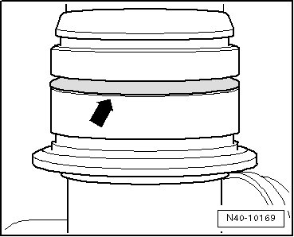
- Clean contact surfaces with a lint free cloth.
• Even the smallest amount of contamination leads to air spring damper leaks.
- Lightly grease gasket with (N 052 150 00).
- Position boot - 2 - on shock absorber.
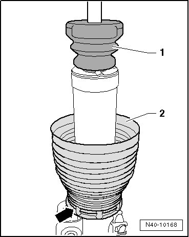
- Slide stop buffer - 1 - with smaller diameter down onto shock absorber.
- Cover boot over shock absorber collar so that collar engages in groove on boot - arrow -.
- Slide boot down and have it secured by a 2nd technician.
• If air spring is reused and air spring has slipped out of outer guide, it must be slid in again by forming even circumferential folds on boot - arrows -.
- Remove transportation protection from air spring.
- Position air spring on shock absorber and slide it onto shock absorber collar as far as stop. Grasp air spring rolling pistons --> [ (Item 5) Rolling piston ] Air Spring Damper Components with both hands and slide it down with light right/left rotations.
- Position bearing and secure with a new nut.
1. Commercially available ratchet
2. (T10001/14)
3. (T10001/11)
4. (T10001/3)
- Clean contact surfaces on mounting bracket and air spring with a lint-free cloth.
• Even the smallest amount of contamination leads to air spring damper leaks.
- Replace gasket - arrow - and lightly grease it with (N 052 150 00).
- Align air spring so that residual pressure retaining valve - 1 - is located exactly on imaginary symmetrical axis - arrow - on air spring damper.
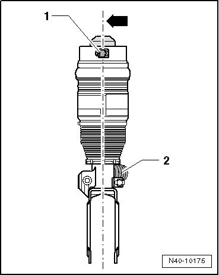
• Only rotate at rolling piston --> [ (Item 5) Rolling piston ] Air Spring Damper Components when doing so in order to avoid damaging boot --> [ (Item 4) Boot ] Air Spring Damper Components inside air spring.
- Residual pressure retaining valve - 1 - points in opposite direction of CDC valve - 2 -.
- Slide boot onto air spring and secure with a new clamp.
- Position mounting bracket and secure air spring with bolts - A arrows -. Counter hold at bracket when doing so to prevent boot from rotating.
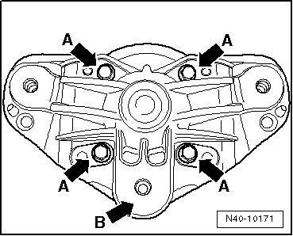
Point - arrow B - must point in direction of residual pressure retaining valve.
- Fill air spring damper. Refer to --> [ Air Spring Damper, Filling ] Air Spring Damper, Filling.
- Align air spring again so that residual pressure retaining valve - 1 - is located exactly on imaginary symmetrical axis - arrow - on air spring damper.
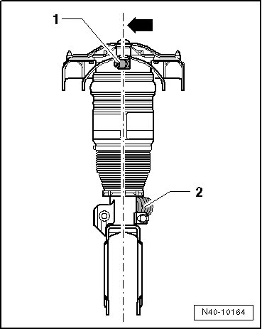
- Residual pressure retaining valve - 1 - points in opposite direction of CDC valve - 2 -.
- Completely submerse air spring damper in a water bath to check for leaks.
If there are no bubbles in the water, air spring damper does not leak and can be reinstalled in the vehicle.
If air bubbles rise up from the air spring damper in the water bath, the damper must be disassembled again and the seals replaced.
• Before installing air spring damper, blow out all electrical connectors and residual pressure retaining valve with compressed air to dry them.
Tightening Specifications
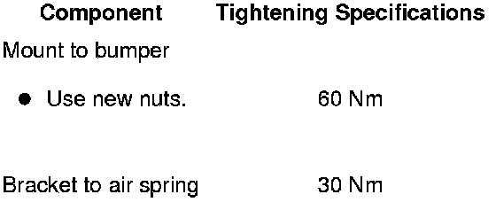